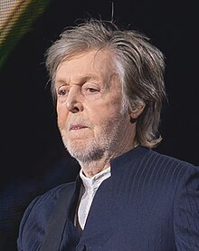
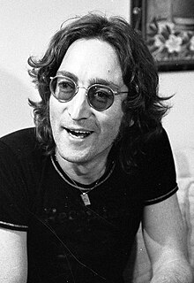

George Harrison

Paul McCartney

Ringo Starr

John Lennon
The Beatles, más conocidos en el mundo hispano como Los Beatles, fue una banda británica de rock formada en Liverpool durante los años 1960. Son considerados uno de los iconos culturales más grandes del siglo XX. Mundialmente, desafiaron paradigmas y estereotipos abordando todos los problemas socioculturales de la época.
Está considerada como la banda más importante del movimiento contracultural de la década de 1960 y de la historia de la música.Enraizada en el skiffle, la música beat y el rock and roll de los años 1950, su sonido incorporaría a menudo elementos de la música clásica y del pop tradicional, entre otros, de forma innovadora en sus canciones; la banda posteriormente llegaría a trabajar con un extenso rango de estilos musicales, yendo desde las baladas y la música de India, hasta la psicodelia y el hard rock. Como pioneros en las formas de grabación, composición y presentación artística; la naturaleza de su enorme popularidad, que había emergido primeramente con la moda de la «beatlemanía», se transformó al tiempo que sus composiciones se volvieron más sofisticadas, revolucionando diversos aspectos de la industria musical y llegando a ser percibidos como la encarnación de los ideales progresistas de las juventudes de la época y sus movimientos sociales y culturales